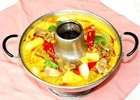
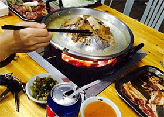
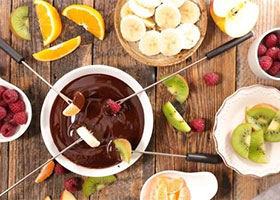

火锅做法
麻辣四川火锅
原料：四川豆瓣酱3汤匙、牛油100克、色拉油100克、干辣椒100克、花椒50克、白糖3汤匙、冰糖15克、老姜1小块、蒜头6瓣、北京葱2段、白酒2汤匙、史云生骨头汤1罐、陈皮1块、草果2枚、小茴香15克、八角3粒、山奈1 粒、桂皮1根、香叶3片、丁香3粒、味精1茶匙、盐2茶匙、白胡椒粉1/2茶匙、生抽2汤匙。
做法：1、锅内倒入色拉油烧热后倒入干辣椒和花椒炒出香味，随后再捞出备用，将白糖倒入油锅内小火炒溶后放入拍扁的葱段、姜块和蒜头。2、待葱蒜炒至色微黄后放入所有的香料一起翻炒，然后再倒入四川豆瓣酱炒匀，这时倒入白酒和生抽以及牛油合炒。 3、最后倒入整罐史云生排骨汤，放入冰糖，再将之前炸过的辣椒和花椒倒回锅内即成为火锅底料。
小贴士：1、牛油并非制作西点的奶油，而是用牛的肥肉熬制出的牛油，用于四川麻辣火锅中增添香味。 2、火锅中所要用到的各种香料可在杂货店或中药店购买。
国外火锅分类
- 
印度特色火锅 - 
朝鲜特色火锅 
韩国特色火锅
泰国冰炭特色火锅
瑞士奶酪火锅- 
瑞士巧克力火锅
制作人：任子欣（计算机类1901班）总结链接